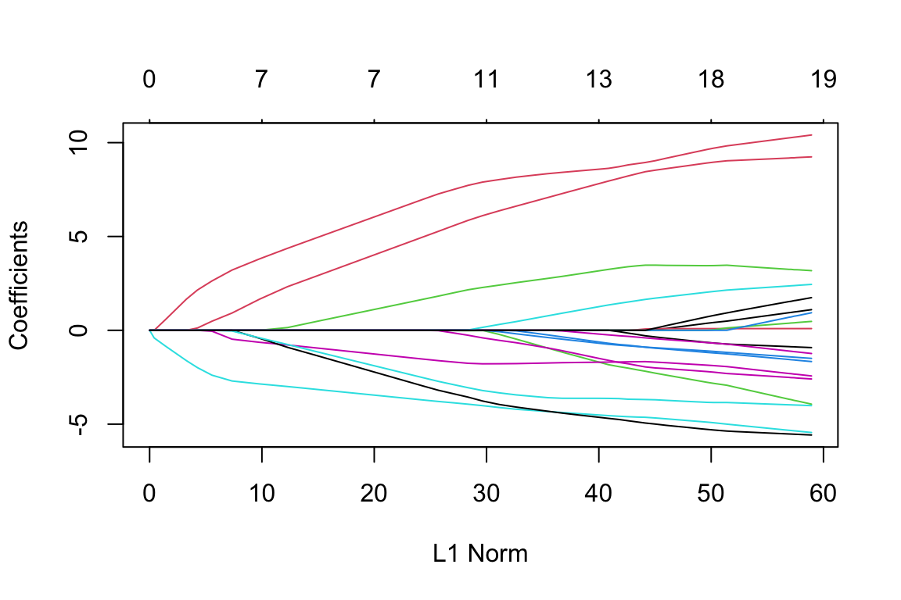
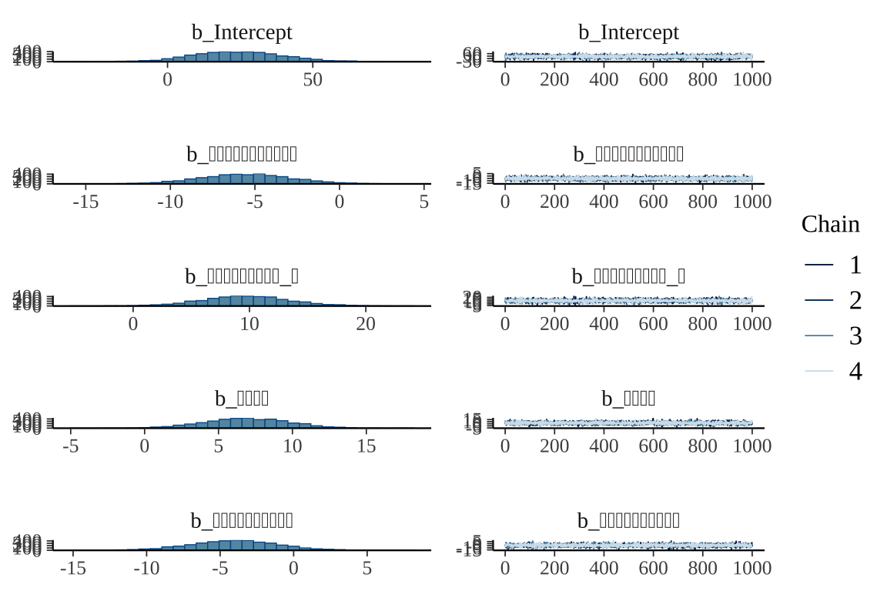
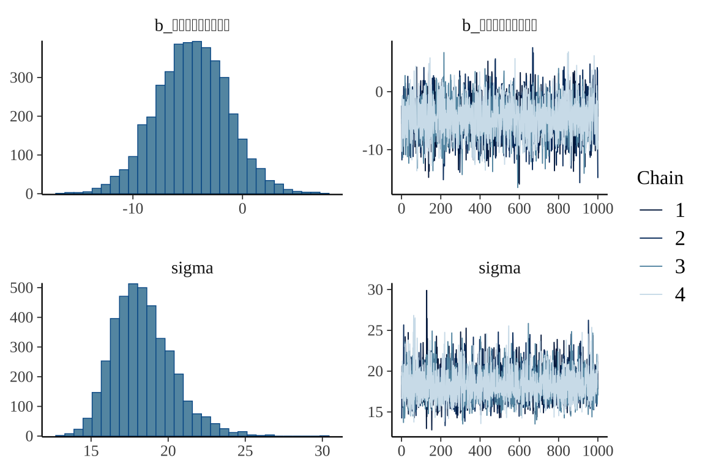

| id | 心理的な仕事の負担（質） | 心理的な仕事の負担（量） | 自覚的な身体的負担度 | 職場の対人関係でのストレス | 職場環境によるストレス | 仕事のコントロール度 | 技能の活用度 | 仕事の適性度 | 働きがい | 活気 | イライラ感 | 疲労感 | 不安感 | 抑うつ感 | 身体愁訴 | 上司からのサポート | 同僚からのサポート | 家族・友人からのサポート | 仕事や生活の満足度 | 測定時点 | スコア | 性別 | 年齢 |
|---|---|---|---|---|---|---|---|---|---|---|---|---|---|---|---|---|---|---|---|---|---|---|---|
| 330 | 1 | 2 | 2 | 2 | 2 | 1 | 3 | 1 | 3 | 2 | 3 | 4 | 2 | 4 | 3 | 2 | 4 | 1 | 2 | 2 | 43 | male | 28 |
| 334 | 1 | 3 | 2 | 1 | 2 | 1 | 2 | 1 | 1 | 3 | 1 | 1 | 1 | 1 | 5 | 1 | 1 | 1 | 2 | 2 | 38 | male | 25 |
| 333 | 3 | 3 | 2 | 2 | 3 | 3 | 3 | 4 | 5 | 5 | 3 | 4 | 3 | 4 | 4 | 3 | 3 | 4 | 4 | 2 | 55 | male | 32 |
| 335 | 4 | 3 | 2 | 4 | 3 | 4 | 3 | 3 | 1 | 4 | 2 | 4 | 5 | 5 | 4 | 2 | 3 | 2 | 3 | 2 | 42 | male | 27 |
| 328 | 4 | 3 | 4 | 3 | 4 | 5 | 5 | 4 | 5 | 5 | 4 | 5 | 4 | 5 | 4 | 5 | 4 | 2 | 5 | 2 | 34 | male | 39 |
| 332 | 3 | 4 | 3 | 3 | 5 | 3 | 3 | 3 | 3 | 4 | 3 | 4 | 4 | 4 | 3 | 4 | 5 | 4 | 4 | 2 | 10 | female | 25 |
ココシルデータ解析２
ココシルスコアと職業性ストレスチェックとの関係の特定
はじめに
ココシルの位置付けをわかりやすく説明するために， バイオピリンと職業性ストレスチェックとの相関を詳細に検討し， ココシルスコアがどのような意味で職業性ストレスチェックの要約になっているかを解明する． これは結局変数選択をした後の，右辺の式の形を見る問題になる．
1 まとめ
2 解析（途中）
2.1 事前処理
２回繰り返しココシル測定データを R に読み込んで整理する．
2.2 一旦線型回帰をかけてみる（ベイズ）
library(brms)
df_short <- df_long[,c(2:20,22)]
colnames(df_short)[c(1,2,18)] <- c("心理的な仕事の負担_質", "心理的な仕事の負担_量", "家族と友人からのサポート")
# 線型回帰モデルの定義
fit <- brm(
formula = スコア ~ .,
data = df_short,
family = gaussian(),
chains = 4,
cores = 4
)summary(fit) Family: gaussian
Links: mu = identity; sigma = identity
Formula: スコア ~ 心理的な仕事の負担_質 + 心理的な仕事の負担_量 + 自覚的な身体的負担度 + 職場の対人関係でのストレス + 職場環境によるストレス + 仕事のコントロール度 + 技能の活用度 + 仕事の適性度 + 働きがい + 活気 + イライラ感 + 疲労感 + 不安感 + 抑うつ感 + 身体愁訴 + 上司からのサポート + 同僚からのサポート + 家族と友人からのサポート + 仕事や生活の満足度
Data: df_short (Number of observations: 52)
Draws: 4 chains, each with iter = 2000; warmup = 1000; thin = 1;
total post-warmup draws = 4000
Regression Coefficients:
Estimate Est.Error l-95% CI u-95% CI Rhat Bulk_ESS
Intercept 28.77 35.23 -39.44 98.80 1.00 3044
心理的な仕事の負担_質 -0.97 4.21 -9.20 7.20 1.00 3144
心理的な仕事の負担_量 10.54 6.58 -1.77 23.73 1.00 2546
自覚的な身体的負担度 -4.14 8.07 -20.17 11.60 1.00 2603
職場の対人関係でのストレス -1.78 4.41 -10.49 6.87 1.00 2675
職場環境によるストレス -5.52 4.30 -13.95 3.17 1.00 2922
仕事のコントロール度 -2.38 4.90 -11.61 7.44 1.00 2675
技能の活用度 1.19 5.12 -9.17 11.03 1.00 2667
仕事の適性度 0.09 3.98 -7.75 8.04 1.00 2953
働きがい 3.08 5.62 -7.83 14.14 1.00 2495
活気 -1.59 3.76 -9.16 5.85 1.00 3706
イライラ感 2.45 4.08 -5.46 10.51 1.00 3026
疲労感 -2.56 5.42 -13.43 8.43 1.00 2741
不安感 -5.70 5.58 -16.51 5.35 1.00 2544
抑うつ感 9.31 4.47 0.37 17.92 1.00 2951
身体愁訴 0.49 4.48 -8.59 9.26 1.00 3747
上司からのサポート 1.15 6.53 -11.67 13.90 1.00 2270
同僚からのサポート -4.15 5.37 -14.66 6.56 1.00 2699
家族と友人からのサポート -1.30 3.48 -8.34 5.59 1.00 2468
仕事や生活の満足度 2.00 5.97 -9.92 14.23 1.00 2686
Tail_ESS
Intercept 3320
心理的な仕事の負担_質 2453
心理的な仕事の負担_量 2744
自覚的な身体的負担度 2658
職場の対人関係でのストレス 2870
職場環境によるストレス 2699
仕事のコントロール度 2602
技能の活用度 2840
仕事の適性度 3010
働きがい 2581
活気 2810
イライラ感 2667
疲労感 2831
不安感 2563
抑うつ感 2828
身体愁訴 2864
上司からのサポート 2799
同僚からのサポート 2848
家族と友人からのサポート 2574
仕事や生活の満足度 2673
Further Distributional Parameters:
Estimate Est.Error l-95% CI u-95% CI Rhat Bulk_ESS Tail_ESS
sigma 20.89 2.67 16.50 26.95 1.00 2237 2976
Draws were sampled using sampling(NUTS). For each parameter, Bulk_ESS
and Tail_ESS are effective sample size measures, and Rhat is the potential
scale reduction factor on split chains (at convergence, Rhat = 1).plot(fit)2.3 これ LASSO で良いかもしれない
library(glmnet)
y <- df_short$スコア
x <- df_short[, !names(df_short) %in% "スコア"]
fit <- glmnet(x, y)
plot(fit)
- 職場環境によるストレス（ー）
- 心理的な仕事の負担_量（＋）
- 抑うつ感（＋）
- 仕事のコントロール度（ー）
- 同僚からのサポート（ー）
- 働きがい（＋）
- 不安感（ー）
coef(fit, s = 4.3)20 x 1 sparse Matrix of class "dgCMatrix"
s1
(Intercept) 40.0697796
心理的な仕事の負担_質 .
心理的な仕事の負担_量 .
自覚的な身体的負担度 .
職場の対人関係でのストレス .
職場環境によるストレス -0.4040551
仕事のコントロール度 .
技能の活用度 .
仕事の適性度 .
働きがい .
活気 .
イライラ感 .
疲労感 .
不安感 .
抑うつ感 .
身体愁訴 .
上司からのサポート .
同僚からのサポート .
家族と友人からのサポート .
仕事や生活の満足度 . coef(fit, s = 3.5)20 x 1 sparse Matrix of class "dgCMatrix"
s1
(Intercept) 38.621965
心理的な仕事の負担_質 .
心理的な仕事の負担_量 1.254752
自覚的な身体的負担度 .
職場の対人関係でのストレス .
職場環境によるストレス -1.326897
仕事のコントロール度 .
技能の活用度 .
仕事の適性度 .
働きがい .
活気 .
イライラ感 .
疲労感 .
不安感 .
抑うつ感 .
身体愁訴 .
上司からのサポート .
同僚からのサポート .
家族と友人からのサポート .
仕事や生活の満足度 . coef(fit, s = 3.2)20 x 1 sparse Matrix of class "dgCMatrix"
s1
(Intercept) 37.95481457
心理的な仕事の負担_質 .
心理的な仕事の負担_量 1.74713025
自覚的な身体的負担度 .
職場の対人関係でのストレス .
職場環境によるストレス -1.68159031
仕事のコントロール度 .
技能の活用度 .
仕事の適性度 .
働きがい .
活気 .
イライラ感 .
疲労感 .
不安感 .
抑うつ感 0.02159717
身体愁訴 .
上司からのサポート .
同僚からのサポート .
家族と友人からのサポート .
仕事や生活の満足度 . coef(fit, s = 2.9)20 x 1 sparse Matrix of class "dgCMatrix"
s1
(Intercept) 36.79685743
心理的な仕事の負担_質 .
心理的な仕事の負担_量 2.26025109
自覚的な身体的負担度 .
職場の対人関係でのストレス .
職場環境によるストレス -2.08265631
仕事のコントロール度 -0.01088252
技能の活用度 .
仕事の適性度 .
働きがい .
活気 .
イライラ感 .
疲労感 .
不安感 .
抑うつ感 0.20825916
身体愁訴 .
上司からのサポート .
同僚からのサポート .
家族と友人からのサポート .
仕事や生活の満足度 . coef(fit, s = 2.5)20 x 1 sparse Matrix of class "dgCMatrix"
s1
(Intercept) 34.44886721
心理的な仕事の負担_質 .
心理的な仕事の負担_量 3.11100519
自覚的な身体的負担度 .
職場の対人関係でのストレス .
職場環境によるストレス -2.64732213
仕事のコントロール度 -0.39913592
技能の活用度 .
仕事の適性度 .
働きがい .
活気 .
イライラ感 .
疲労感 .
不安感 .
抑うつ感 0.84612453
身体愁訴 .
上司からのサポート .
同僚からのサポート -0.02970209
家族と友人からのサポート .
仕事や生活の満足度 . coef(fit, s = 2.2)20 x 1 sparse Matrix of class "dgCMatrix"
s1
(Intercept) 32.8651263
心理的な仕事の負担_質 .
心理的な仕事の負担_量 3.9201708
自覚的な身体的負担度 .
職場の対人関係でのストレス .
職場環境によるストレス -2.8850679
仕事のコントロール度 -0.6681094
技能の活用度 .
仕事の適性度 .
働きがい 0.0294705
活気 .
イライラ感 .
疲労感 .
不安感 -0.5223057
抑うつ感 1.7934085
身体愁訴 .
上司からのサポート .
同僚からのサポート -0.4738716
家族と友人からのサポート .
仕事や生活の満足度 . coef(fit, s = 2.0)20 x 1 sparse Matrix of class "dgCMatrix"
s1
(Intercept) 31.6329342
心理的な仕事の負担_質 .
心理的な仕事の負担_量 4.4923163
自覚的な身体的負担度 .
職場の対人関係でのストレス .
職場環境によるストレス -3.0292994
仕事のコントロール度 -0.8153373
技能の活用度 .
仕事の適性度 .
働きがい 0.2173602
活気 .
イライラ感 .
疲労感 .
不安感 -1.0030051
抑うつ感 2.4498852
身体愁訴 .
上司からのサポート .
同僚からのサポート -0.8397849
家族と友人からのサポート .
仕事や生活の満足度 . coef(fit, s = 1.1)20 x 1 sparse Matrix of class "dgCMatrix"
s1
(Intercept) 25.402439698
心理的な仕事の負担_質 .
心理的な仕事の負担_量 7.163348270
自覚的な身体的負担度 .
職場の対人関係でのストレス .
職場環境によるストレス -3.762904968
仕事のコントロール度 -1.586354739
技能の活用度 .
仕事の適性度 .
働きがい 1.760512480
活気 .
イライラ感 .
疲労感 -0.010687147
不安感 -3.111804027
抑うつ感 5.165054724
身体愁訴 -0.003504387
上司からのサポート .
同僚からのサポート -2.649852101
家族と友人からのサポート .
仕事や生活の満足度 . coef(fit, s = 1.0)20 x 1 sparse Matrix of class "dgCMatrix"
s1
(Intercept) 24.93745208
心理的な仕事の負担_質 .
心理的な仕事の負担_量 7.43116938
自覚的な身体的負担度 .
職場の対人関係でのストレス .
職場環境によるストレス -3.84159566
仕事のコントロール度 -1.66675472
技能の活用度 .
仕事の適性度 .
働きがい 1.94335455
活気 .
イライラ感 .
疲労感 -0.10239212
不安感 -3.32394496
抑うつ感 5.48228332
身体愁訴 -0.01193691
上司からのサポート .
同僚からのサポート -2.84150386
家族と友人からのサポート .
仕事や生活の満足度 . coef(fit, s = 0.85)20 x 1 sparse Matrix of class "dgCMatrix"
s1
(Intercept) 24.38593274
心理的な仕事の負担_質 .
心理的な仕事の負担_量 7.79823396
自覚的な身体的負担度 .
職場の対人関係でのストレス .
職場環境によるストレス -3.96992626
仕事のコントロール度 -1.76983997
技能の活用度 .
仕事の適性度 .
働きがい 2.21242933
活気 .
イライラ感 0.07565762
疲労感 -0.32262016
不安感 -3.64836717
抑うつ感 5.96520047
身体愁訴 -0.01876479
上司からのサポート .
同僚からのサポート -3.12310203
家族と友人からのサポート .
仕事や生活の満足度 . 2.3.1 ５つの変数だけを入れて回帰してみる
fit <- brm(
formula = スコア ~ 職場環境によるストレス + 心理的な仕事の負担_量 + 抑うつ感 + 仕事のコントロール度 + 同僚からのサポート,
data = df_short,
family = gaussian(),
chains = 4,
cores = 4
)library(showtext)
# Googleフォントを使用する場合
font_add_google("Noto Sans JP", "notosans")
showtext_auto() # 自動的にフォントを適用
plot(fit)

summary(fit) Family: gaussian
Links: mu = identity; sigma = identity
Formula: スコア ~ 職場環境によるストレス + 心理的な仕事の負担_量 + 抑うつ感 + 仕事のコントロール度 + 同僚からのサポート
Data: df_short (Number of observations: 52)
Draws: 4 chains, each with iter = 2000; warmup = 1000; thin = 1;
total post-warmup draws = 4000
Regression Coefficients:
Estimate Est.Error l-95% CI u-95% CI Rhat Bulk_ESS
Intercept 24.09 15.55 -6.11 54.37 1.00 5172
職場環境によるストレス -5.53 2.68 -10.73 -0.21 1.00 5250
心理的な仕事の負担_量 9.68 3.80 2.12 17.39 1.00 4733
抑うつ感 6.90 2.84 1.26 12.32 1.00 3852
仕事のコントロール度 -4.04 2.99 -10.02 1.91 1.00 4249
同僚からのサポート -4.60 3.30 -11.13 1.78 1.00 4272
Tail_ESS
Intercept 3221
職場環境によるストレス 2936
心理的な仕事の負担_量 2848
抑うつ感 2923
仕事のコントロール度 2998
同僚からのサポート 3054
Further Distributional Parameters:
Estimate Est.Error l-95% CI u-95% CI Rhat Bulk_ESS Tail_ESS
sigma 18.36 1.95 15.12 22.81 1.00 4556 2800
Draws were sampled using sampling(NUTS). For each parameter, Bulk_ESS
and Tail_ESS are effective sample size measures, and Rhat is the potential
scale reduction factor on split chains (at convergence, Rhat = 1).